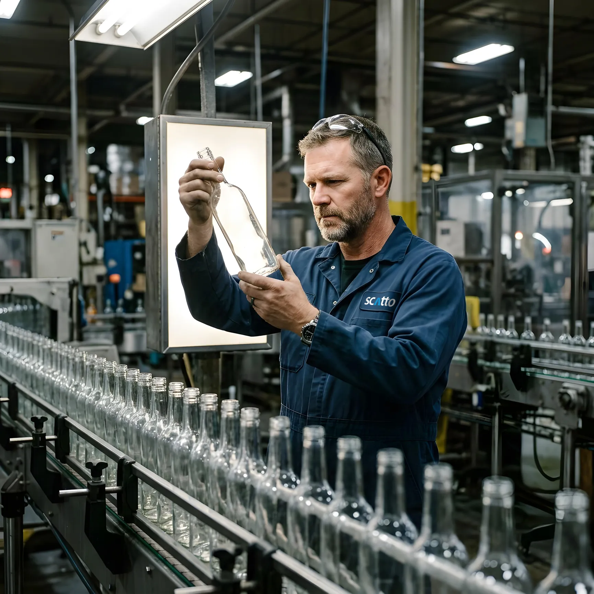
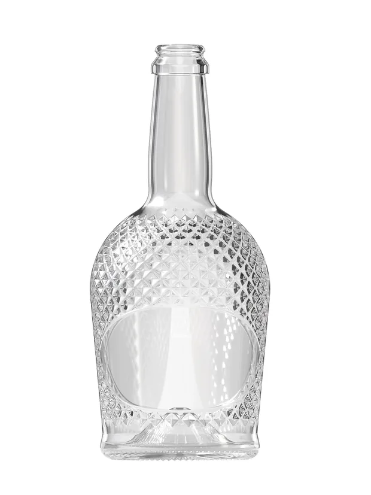
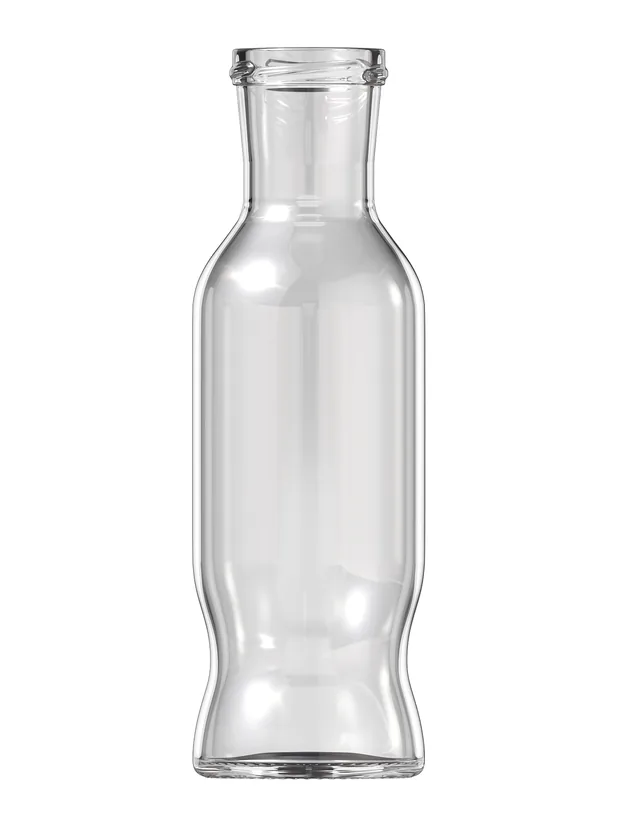
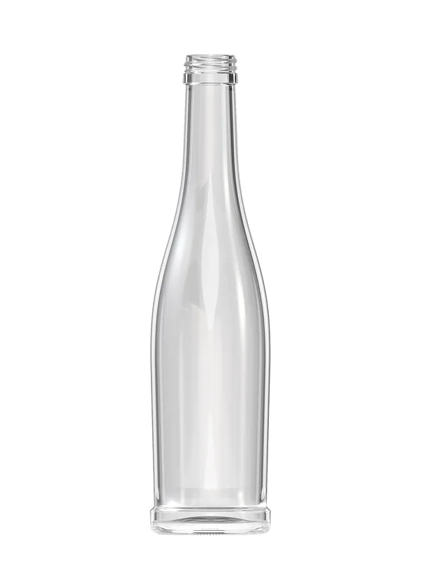
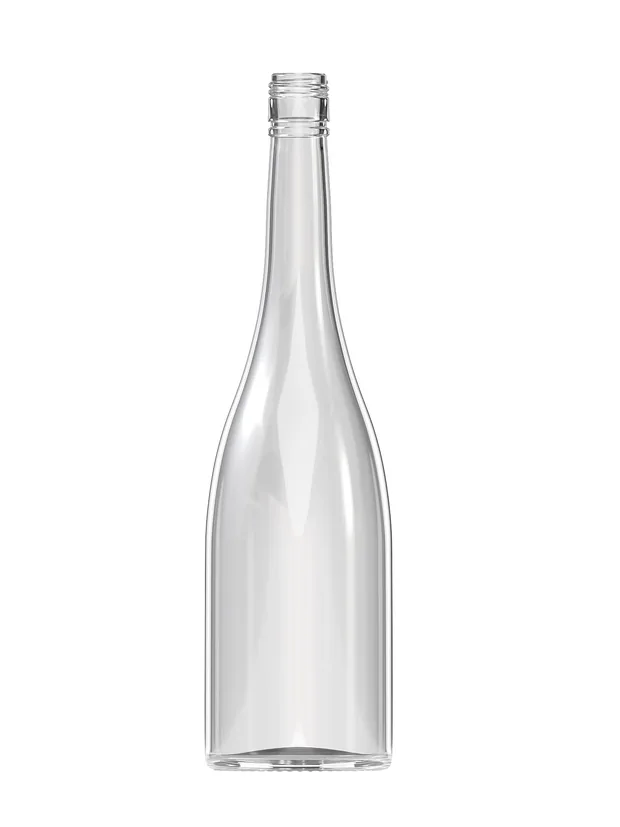

Почему нас
выбирают?
Качество продукции
и надёжность партнёрства —
основа нашей работы.
Мы производим и поставляем стеклянные
бутылки, уделяя внимание качеству исполнения,
функциональности и требованиям к упаковке.
Понимаем, насколько важно для бизнеса получать
продукцию с предсказуемыми характеристиками
и быть уверенным в поставщике.
Каталог стеклянных
бутылок и банок
Выразительная форма и продуманные детали упаковки помогают
подчеркнуть особенности алкогольных и безалкогольных напитков, привлечь
внимание покупателей и повысить узнаваемость марки. Помимо визуальной
составляющей, стеклянная тара обладает необходимыми свойствами для
хранения и транспортировки напитков, обеспечивая защиту содержимого и
сохраняя его потребительские характеристики.
-

СКАТТО ДРИМЛЕНД
- Высота
- 270 ± 1,8 мм
- Диаметр
- Ø92,3 ± 1,6 мм
- Венчик
- III-4-66 · твист-офф Ø66
- Масса
- 500 г
-

ДИЛИЯ 750
- Высота
- 270 ± 1,8 мм
- Диаметр
- Ø92,3 ± 1,6 мм
- Венчик
- III-4-66 · твист-офф Ø66
- Масса
- 500 г
-

ВИНЕТТИ 330
- Высота
- 270 ± 1,8 мм
- Диаметр
- Ø92,3 ± 1,6 мм
- Венчик
- III-4-66 · твист-офф Ø66
- Масса
- 500 г
-

ВЕНЕЦИЯ 750
- Высота
- 270 ± 1,8 мм
- Диаметр
- Ø92,3 ± 1,6 мм
- Венчик
- III-4-66 · твист-офф Ø66
- Масса
- 500 г
Надёжные поставки.
Уверенность
в каждой бутылке.
Мы понимаем, насколько важна сохранность стеклянной
упаковки для бесперебойной работы производства и
стабильности поставок. Поэтому уделяем особое внимание
организации логистики, учитывая хрупкость стеклянных бутылок
и необходимость их надёжной защиты при транспортировке.
Организуем бережную доставку заказов во все регионы России,
чтобы клиенты могли получать продукцию в надлежащем
состоянии, планировать закупки и поддерживать необходимые
запасы упаковки. Мы стремимся сделать поставки стеклянной
тары предсказуемым и удобным процессом, чтобы наши
партнёры могли сосредоточиться на производстве и развитии
своего бизнеса.
Каждая бутылка
заслуживает
бережной доставки.
Часто задаваемые вопросы
о стеклянных бутылках:
ООО «СКАТТО» (Москва) поставляет винные бутылки «Бургундия» 0,75 л и «Бордо» 0,375 л — в наличии,
самовывоз с Сергиево-Посадского стекольного завода (с. Иудино, д. 5), — и банки «Дилия» 500, 750
и 1000 мл. Телефон +7 916 041-70-00.
Цена зависит от объёма партии, укупорки и условий доставки и рассчитывается для каждого клиента. Оставьте заявку — менеджер пришлёт предложение в течение рабочего дня.
«Бургундия» 0,75 л под пробку — 1183 шт. в паллете, 26 паллет = 30 758 шт. в машине. «Бургундия» под винт 30×60 — 1014 шт., 26 364 шт. в машине. «Бордо» 0,375 л — 2968 шт., 77 168 шт. в машине. Паллеты с межрядными прокладками в термоусадочной плёнке.
Банка «Дилия 6» 1000 мл (артикул B394) имеет венчик III-4-66 под крышку твист-офф диаметром 66 мм. Банка «Дилия 6» 750 мл — венчик III-3-58 под крышку твист-офф 58 мм.
Да. Винзавод «Долина» (Краснодарский край) разливает в литровую «Дилию 6» полусладкое красное и белое вино «Винная долина» под серебристую крышку твист-офф Ø66.
Высота 270 ± 1,8 мм, наибольший диаметр 92,3 ± 1,6 мм, номинальная вместимость 1000 ± 20 мл, полная — 1102 мл, уровень налива 52 мм от торца, масса 500 г, 504 грани рифления.
Да. По банкам «Дилия» есть 3D-модель (GLB, STL), чертёж с допусками и рендеры 1600 × 2000. Для винных бутылок 3D-модели готовятся. Оставьте заявку — пришлём файлы.
Декларация соответствия и паспорт качества предоставляются с каждой партией.
Да. СКАТТО ведёт проект от брифа и эскизов до чертежа, 3D-модели, рендеров и согласования с заводом-изготовителем, затем организует поставку партии.
Подберём
стеклянную бутылку
под ваш продукт
Расскажите, какую продукцию вы разливаете и
какой объём партии планируете. Подберём
стеклянные бутылки или банки
с подходящими крышками, рассчитаем стоимость
заказа и предоставим образцы, чертежи и
3D-модели для оценки перед запуском в
производство.